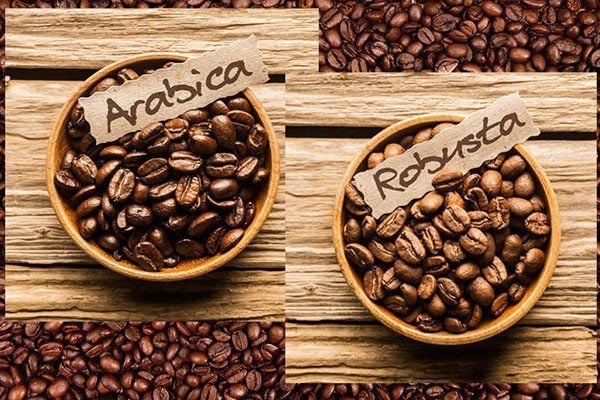
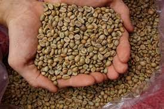

Hạt Giống Arabica
Arabica là loại hạt cà phê phổ biến nhất, thường được biết đến với hương vị nhẹ nhàng, độ axit cao và hương thơm phức tạp. Loại hạt này thích hợp cho những người muốn thưởng thức cà phê có chất lượng cao.

Hạt Giống Robusta
Robusta có hương vị mạnh mẽ và đắng hơn so với Arabica, thường chứa nhiều cafein hơn. Loại hạt này thích hợp cho những người muốn thưởng thức cà phê mạnh mẽ và đắng.